ST-391-3-MATHS (E)-3-VOL-1
3
THOUSANDS AND THOUSANDS
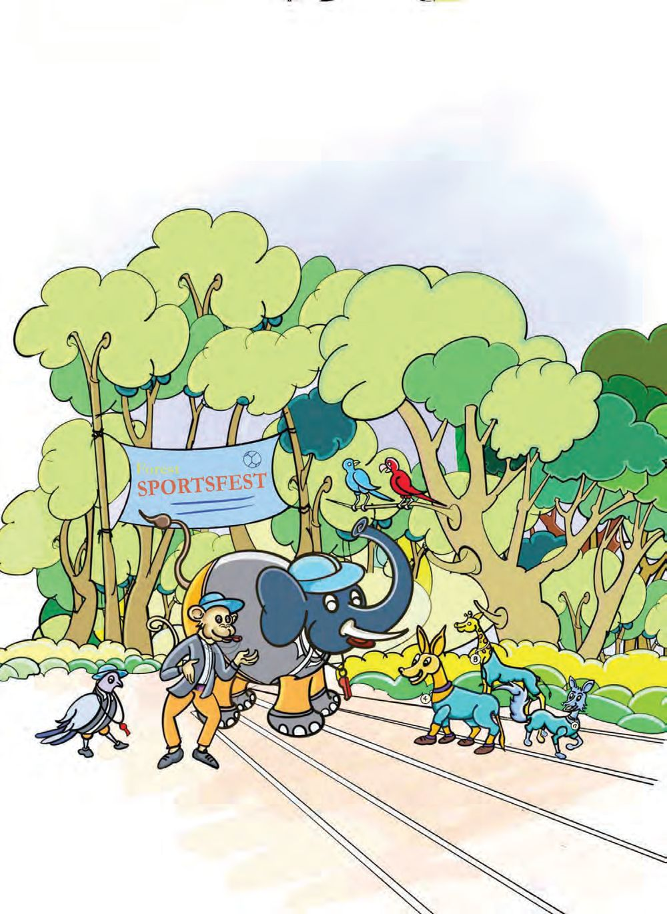

ST-391-3-MATHS (E)-3-VOL-1
3
THOUSANDS AND THOUSANDS

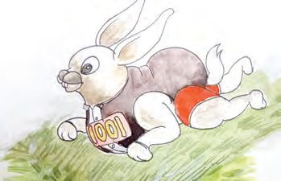
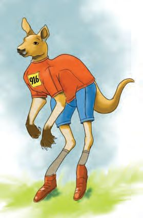
Mathematics Standard - III
Sports-fest Welcome to the sports-fest at Poomala forest. All contestants please collect your chest numbers. The 15 athletes starting with number 986 please get ready for the long jump event.
Write the chest numbers of the contestants for the long jump event.
990
986
Me too! Your number is 1001. Your name is not in the long jump list. 1000 and 1 together make 1001. Whoops! Now the numbers are jumbled. Can you help me put them in order?
1002, 1003, 1004, ......., ........, ........, ........, ........., ........., ........, 1012
34
986

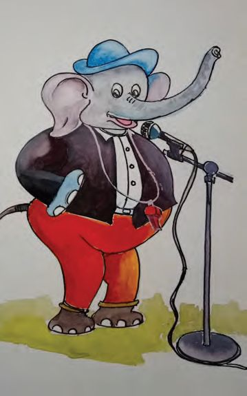
Thousands and Thousands
Announcement The table shows the numbers of the contestants for manchadi collection. It must be filled for the announcement. Can you help Kuttan elephant? 879
Eight hundred seventy nine
904 918 906 809 749
ATM Titu parrot has sponsored some prizes. She needs 760 rupees for it. The ATM in the forest has only 100 rupee notes, 10 rupee notes and 1 rupee coins. What all notes and coins would she have got? How many of each? My computation
35

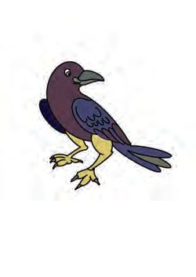
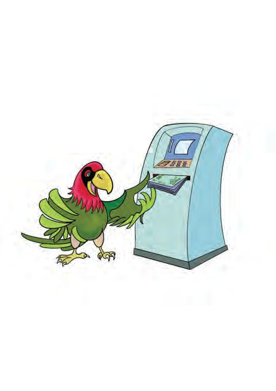
Mathematics Standard - III
Fund raising
A group of four were asked to collect money for food. See how much each got. Member
100 rupee 10 rupee notes notes
9
8
7
14
1 rupee coins
Total
3
983
785 10
909
Chakki kite collected 785 rupees. What are the ways in which she could have got this? See how some of her friends thought about this. 7 hundreds ................ tens 5 ones
................ ones
7 hundreds ................ ones
78 ........... 5...........
700 + ................ + 5
70 tens 85 ................
6 hundreds ................ tens 5 ones
600 + ...........
Write in your notebook, the different ways of splitting 909 rupees collected by Kunjan owl.
36

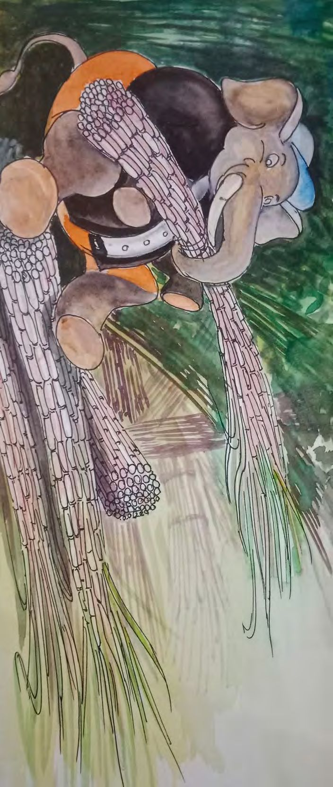
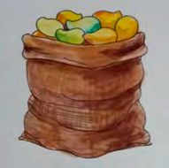
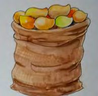
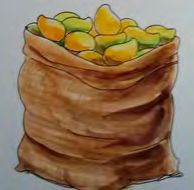
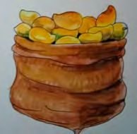
Thousands and Thousands
Eating contest
Mallan elephant is making bundles of sugar cane for the eating contest. He has made 20 bundles of 100 each. How many sugar canes in all?
Number of bundles
Jimpan giraffe, Balu bear and Dinku donkey agreed to carry the sugar cane bundles to the spot. How many bundles did each carry?
Number of sugar canes
6 10
2000 mangoes were stored for the contest. They are kept in 4 sacks, each containing the same number of mangoes. How many in each?
37

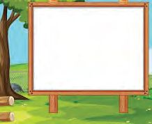
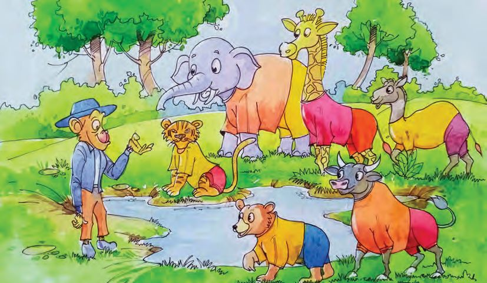
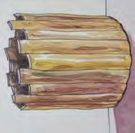
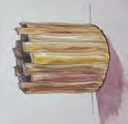
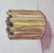
Mathematics Standard - III
Water drinking contest Those who have given their names for the water drinking competition please report at once.
There are barrels containing 50
30 litres, 20 litres and 10
50
litres of water. The one who drinks the most is the 20
20
20
20
winner.
10
38
10


Thousands and Thousands
See how much each has drunk. Complete the table Name
Amount of water 50 litres 20 litres 10 litres
Jimpan Giraffe
1
3
1
Kompan elephant
3
4
2
Jintu bear
2
2
Kuttan camel
5
10
Total in litres
Mallan tiger
80
Chillu bison
100
Who won? Think of two 50 litre barrels of water. How many 20 litre barrels contain the same amount of water? And how many 10 litre barrels? Don’t you know that we won’t have enough water during summer? Please don’t waste water. Write the amount of water each has drunk in the ascending order.
39


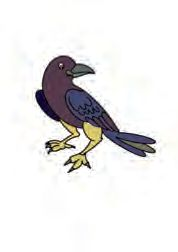

Mathematics Standard - III
Gift coupons Kangaroo Sports gave a gift coupon worth 900 rupees to each of the contestants in the first three positions. Each could choose three items. Which items would they have chosen?
Item Cricket bat
Badminton bat Football Shuttlecock Net Volleyball
Item
Price (Rs.)
Price (Rs.)
750
Shoes
300
600
Jersey
200
Gloves
150
Chessboard
100
Cricket ball
50
650 250 400 350
Items selected
40
Price (Rs.)

Thousands and Thousands
Children’s contests Mittu rabbit is preparing chest numbers for the children’s contests. • Chest numbers from 10 to 20 are made for the 100 metre race. How many cards are there? • Numbers from 30 to 50 are, made for the swimming contest. How many are given the cards? • Numbers from 60 to 100 are for gooseberry gathering. How many cards are needed for this event? How I found the answer
• How many two-digit numbers are there in all?
• How many numbers are there between 100 and 200?
• How many three-digit numbers are there in all?
• How many odd numbers are there between 1 and 100?
• How many even numbers are there between 1 and 100?
How I calculated
Any other method?
41


Mathematics Standard - III
Card games Me too for the number card game!
Each player is given 4 cards. The winner is the one who makes the most three-digit numbers without any repetition of digits. Look at the cards Maniyan ant got 9
3
2
5
What would be the three-digit numbers he made?
The largest number made
The smallest number made
Draw beads in the abacus to show the smallest number.
Hundred
42
Ten
One


Thousands and Thousands
What is the peculiarity of the sum of two consecutive numbers? 1 + 2,
2 + 3, .........., ..........., 5 + 6,
6 + 7, ...
Do more examples to find the peculiarity• What’s the peculiarity of the sum of two odd numbers? • What about the sum of two even numbers?
• How much does 6, 60 and 600 make? • 8 hundreds added together is equal to how many tens added together?
Evaluation activities
1. The number formed by 7 hundreds, 6 tens and 5 ones was written as 675. What is the correct number? How many tens should be added to 675 to get the correct number? 2. If one bead in the place of 100 is shifted to the place of 10, how much would the number decrease? The present number After shifting the bead Hundred
Ten
One
If a bead from hundred’s place is shifted to one’s place, how much would the number decrease?
43

Mathematics Standard - III
Using only the number of beads now in the abacus, The largest three digit number that can be made. The smallest three-digit number that can be made.
3. Complete the pattern •
596, 597, 598, .……., .…….
•
102, 112, 122, …….., .…….
•
123, 234, 345, …….., .…….
•
986, 886, 786, …….., .…….
•
900, 890, 880, …….., .…….
• 4. Fill up the blanks 789 ones 789
789
78 tens 9 ones
44